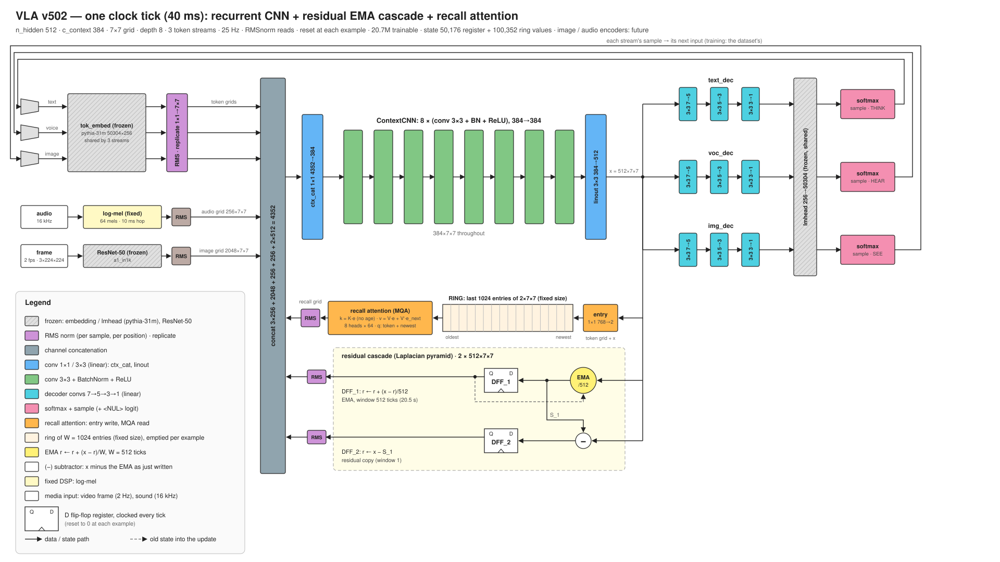

Silicon Perception Inc · open source
A recurrent CNN vision-language-action model
The goal is a vision-language-action model on a single chip that runs at very high frame rates, up to 500 Hz, with deterministic latency, so it can sit inside an embedded control loop. Single chip means no external components: no off-chip memory, every weight stored on the chip itself.
Two properties make that possible. The model's state has a fixed size, so every tick does exactly the same work and finishes in the same time, however long the model has been running. And a CNN is parameter-efficient: the same small kernels run at every grid position and every tick, so about twenty million weights drive a state of 150,528 values.

How a tick works
- The current token's embedding is normalized and copied to every position of a 7 × 7 grid.
- One attention read recalls from a ring holding a small entry for each of the last 1,024 ticks; the result is normalized and copied to a grid like the token.
- Those grids, the sound grid and the two registers (each normalized per position) are concatenated and mixed by a 1 × 1 convolution.
- Eight 3 × 3 convolutions with BatchNorm and ReLU transform the result, and a 3 × 3 convolution projects it to register width.
- The registers are written as a cascade: the first moves 1/512 of the way toward the new output, the second holds the remainder, so the two always sum to it. A 1 × 1 convolution of the token and the output becomes the ring's newest entry, and the oldest is dropped.
- A small tree of convolutions collapses the grid to one vector, and a frozen output layer gives the next token.
Results
VLA against pythia-70m, at matched training tokens
Pythia publishes checkpoints from the start of its training, so a small CNN with a fixed-size state can be compared with a transformer at every point along the way, not only at the end. The plan:
- Same documents. Score both models on the same held-out FineWeb documents, by the same rule (nats per token, and per character, which does not depend on the tokenizer).
- Loss against tokens seen. One curve per model: the published VLA weights at each step pushed to Hugging Face, and pythia-70m at its checkpoints from 2 M to 300 B tokens.
- Use of context. Loss by position in the document (tokens 0-63, 64-255, 256-1023): how much each model gains from what it has already read.
- Grammar and common sense. BLiMP and ComVE minimal pairs at matched tokens.
- Cost per token. Weights, state and operations per token, next to the scores.
Pythia was trained on the Pile, not FineWeb; the comparison will show both models on both. Interim scores for the current weights are on the model card.
Samples
From the prompt in bold, with the published weights (30 M tokens of training). Locally fluent, not yet coherent:
My grandmother's recipe for apple pie starts with a couple of pieces of brownberries, and an unpacked blackberry sauce. … The spices is creamy and a nice, stylish and gentle, long and gorgeous, and more than 100 grams of pork …
The best way to learn a new language is not a form of choice to all ages, but the “satisfishing” to the future. We look forward to learning of a diverse social life of the world. It's a big problem.
Try it
git clone https://github.com/siliconperception/vla && cd vla
pip install -r requirements.txt
for p in "The colors of the rainbow are" \
"The best way to learn a new language is" \
"My grandmother's recipe for apple pie starts with" \
"When you plant a vegetable garden, the first thing to do is" \
"The history of the bicycle began in"; do
python vla.py --pretrained --generate --n 120 --prompt "$p" --device cuda
done
# prompt tuning: fit the starting registers (weights frozen) until the model predicts the prompt,
# then continue from them; prints the cold and the tuned continuation
python vla.py --pretrained --generate --prompt_tune 200 --n 120 --prompt "The colors of the rainbow are" --device cuda